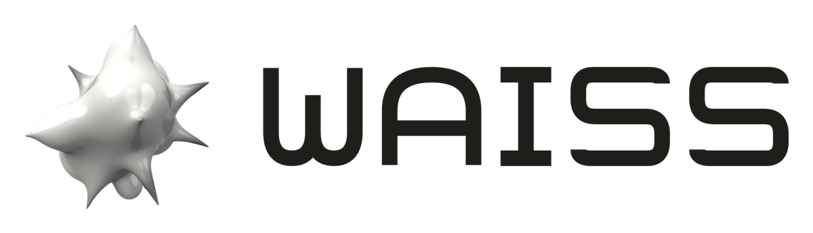
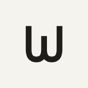
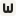

WAISS, gesprochen wie „weiß“: ein monatlicher Stammtisch in Wien für Leute, die mit KI bauen. Ein Format von Telos Circle. Alles bleibt weiß, off-white und creme. Schwarz kommt nur als Tinte vor.
Logo
Es gibt drei Formen: das Lockup aus Blob und Wortmarke, den Blob allein als Bildmarke und das W als Icon. Der Blob lebt von Glanz und Stacheln. Deshalb erst ab etwa 128 px verwenden, darunter das W.



1804832
16


Wortmarke
„WAISS“ im eigenen Secession-Alphabet: quadratische Zellen, an die Wiener Secession angelehnt, Strichstärke 16 von 100, Buchstabenabstand 0,2 × Höhe, nur Großbuchstaben. Als Vektor (SVG, Kontur) für Druck und Web.


Farben
Weiß- und Cremetöne, eine Tinte. Keine Akzentfarbe.
#F5F3EE--waiss-bgHintergrund, Flächen#1F1E1B--waiss-inkText, Wortmarke, Linien. Die einzige dunkle Farbe.#66635C--waiss-mutedNebentext, Daten, Bildunterschriften#FCFBF8--waiss-tileKarten und Kacheln auf dem Hintergrund#C9C5BB--waiss-lineRahmen, Trennlinienlinear-gradient(160deg, #F9F8F4 0%, #F5F3EE 48%, #EDEAE2 100%)
Hintergrund von Folien und WebsiteSchrift
Drei Schriften, alle unter der SIL Open Font License (frei, auch kommerziell). Desktop-Dateien (TTF) zum Installieren in
schrift/desktop/, Webfonts (WOFF2 + fonts.css) in schrift/web/.
Blob
Ein metaball-artiges Objekt, angelehnt an einen 70er-Jahre-Sessel aus verschmolzenen Kugeln. Die 14 Stacheln stehen für das „jagged frontier“-Meme der KI. Echtzeit-WebGL in Folien und Website; hier als Standbilder der vier Varianten (1600 px, transparent). Variante 0 ist die Form auf allen Folien und im Logo.


Regeln
So
- Lockup auf Off-White oder Weiß, helles Lockup auf Tinte oder dunklen Fotos.
- Rund um das Logo mindestens eine Buchstabenhöhe frei lassen.
- Unter 128 px das W-Icon statt des Blobs.
- Absender: „by Telos Circle“ (SVG).

Nicht
- Blob einfärben, verzerren oder mit Kontur versehen.
- Wortmarke in einer anderen Schrift nachsetzen.
- Farben außerhalb der Palette, vor allem keine Akzentfarbe.
- Den Blob klein als Favicon: Stacheln und Glanz werden zu Pixelbrei.